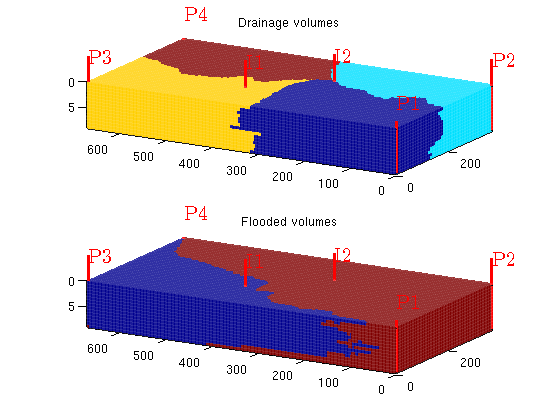
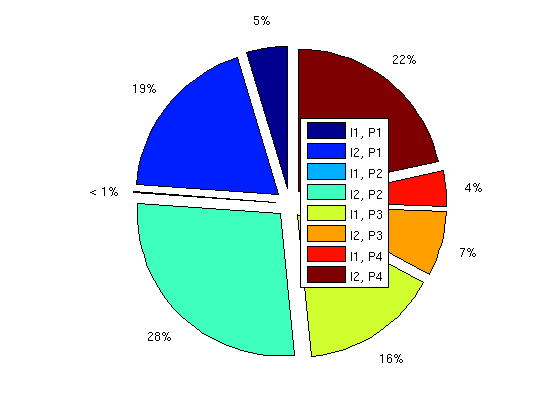
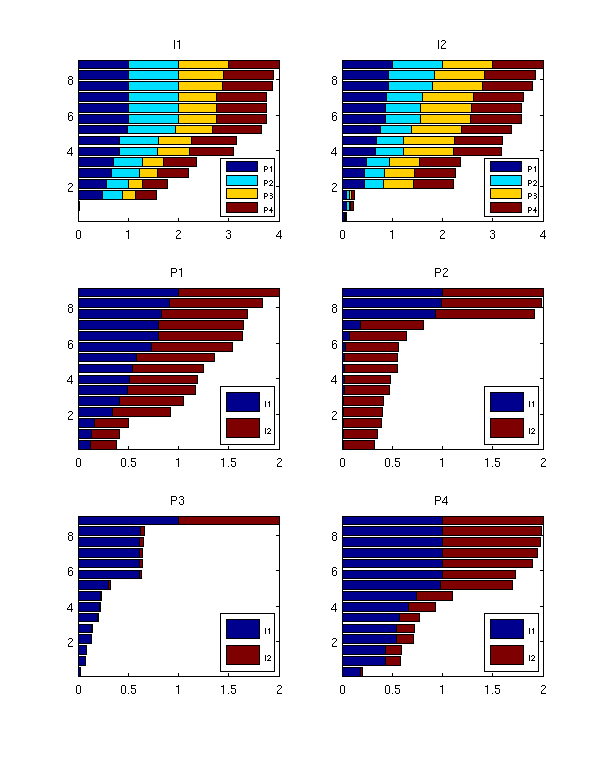
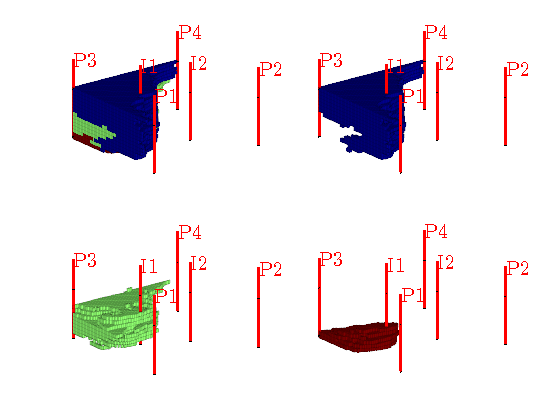
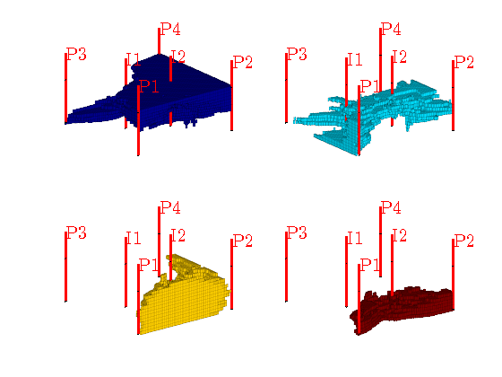

Example 2: Well-pair diagnostics
In this example, we show how one can use static tracer partition to visualize drainage and flooded volumes and compute well-pair diagnostics such as volumes
Contents
Set up problem
As our example, we consider a subsample of Model 2 from the 10th SPE Comparative Solution Project, but with a different well pattern
mrstModule add spe10 cartDims = [ 60, 220, 15]; physDims = [1200, 2200, 2*cartDims(end)] .* ft(); % ft -> m wtype = {'bhp', 'bhp', 'bhp', 'bhp', 'bhp', 'bhp'}; wtarget = [200, 200, 200, 200, 500, 500 ] .* barsa(); wrad = [0.125, 0.125, 0.125, 0.125, 0.125, 0.125] .* meter; wloc = [ 1, 60, 1, 60, 20, 40; 1, 1, 220, 220, 130, 90]; wname = {'P1', 'P2', 'P3', 'P4', 'I1', 'I2'}; if ~readCache({cartDims}, 'verbose', false), rock = SPE10_rock(1:cartDims(end)); rock.perm = convertFrom(rock.perm, milli*darcy); rock.poro = max(rock.poro, 1e-4); G = cartGrid(cartDims, physDims); G = computeGeometry(G); writeCache({cartDims}, {'G', 'rock'}); end W = []; for w = 1 : numel(wtype), W = verticalWell(W, G, rock, wloc(1,w), wloc(2,w), 1 : cartDims(end), ... 'Type', wtype{w}, 'Val', wtarget(w), ... 'Radius', wrad(w), 'Name', wname{w}); end fluid = initSingleFluid('mu', 1*centi*poise, 'rho', 1014*kilogram/meter^3);
Drainage and flooded volumes
rS = initState(G, W, 0); T = computeTrans(G, rock); rS = incompTPFA(rS, G, T, fluid, 'wells', W); D = computeTOFandTracer(rS, G, rock, 'wells', W); clf, subplot(2,1,1); plotCellData(G,D.ppart,'EdgeColor','w','EdgeAlpha',.05); axis tight; plotWell(G,W); title('Drainage volumes'); set(gca,'dataaspect',[1 1 0.1]), view(-60,15) subplot(2,1,2); plotCellData(G,D.ipart,'EdgeColor','w','EdgeAlpha',.05); axis tight; plotWell(G,W); title('Flooded volumes'); set(gca,'dataaspect',[1 1 0.1]), view(-60,15)
Volumes for each well pair
figure WP = computeWellPairs(rS, G, rock, W, D); pie(WP.vols, ones(size(WP.vols))) legend(WP.pairs,'location','Best');
Allocation factors for well pairs
We show a bar plot of well allocation factors for each completion of the wells as a function of the depth of the completion. The allocation factor is defined as the normalized, cummulative flux in/out of a well from bottom and up.
figure; set(gcf,'Position',[10 70 600 760]); for i=1:numel(D.inj) subplot(3,2,i) alloc = bsxfun(@rdivide,cumsum(WP.inj(i).alloc,1),sum(WP.inj(i).alloc)); barh(WP.inj(i).z, alloc,'stacked'); axis tight lh=legend(W(D.prod).name,4); set(lh,'units','pixels'); lp = get(lh,'OuterPosition'); set(lh, 'FontSize',6, 'OuterPosition',[lp(1:2)+[lp(3)-60 0] 60 60]); title(W(D.inj(i)).name); end for i=1:numel(D.prod) subplot(3,2,i+numel(D.inj)) alloc = bsxfun(@rdivide,cumsum(WP.prod(i).alloc,1),sum(WP.prod(i).alloc)); barh(WP.prod(i).z, alloc,'stacked'); axis tight lh=legend(W(D.inj).name,4); set(lh,'units','pixels'); lp = get(lh,'OuterPosition'); set(lh, 'FontSize',6, 'OuterPosition',[lp(1:2)+[lp(3)-60 0] 60 60]); title(W(D.prod(i)).name); end
Look at individual completions
To llok more closely at the performance of the different completions along the well path, we can divide the completion intervals into bins and assign a corresponding set of pseudo wells for which we recompute flow diagnostics. As an example, we split the completions of I1 into three bins and the completions of I2 into four bins.
[rSp,Wp] = expandWellCompletions(rS,W,[5, 3; 6, 4]);
Dp = computeTOFandTracer(rSp, G, rock, 'wells', Wp);
Display flooded regions for I1
figure, subplot(2,2,1); plotCellData(G,Dp.ipart, Dp.ipart<4,'EdgeColor','w','EdgeAlpha',.05); view(3), plotWell(G,W,'radius',3); axis tight off; for i=1:3 subplot(2,2,i+1) plotCellData(G,Dp.ipart, Dp.ipart==i,'EdgeColor','w','EdgeAlpha',.05); view(3), plotWell(G,W,'radius',3); axis tight off; caxis([1 3]); end
Display flooded regions for I2
figure for i=1:4 subplot(2,2,i) plotCellData(G,Dp.ipart, Dp.ipart==i+3,'EdgeColor','w','EdgeAlpha',.05); view(3), plotWell(G,W,'radius',3); axis tight off; caxis([4 7]); end